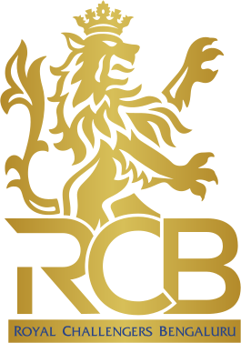

Royal Challengers Bengaluru, also known as RCB, formerly Royal Challengers Bangalore, are a professional Twenty20 cricket team based in Bengaluru, Karnataka, that competes in the Indian Premier League (IPL). Founded in 2008 by United Spirits, the team's home ground is M. Chinnaswamy Stadium. They won their first title in 2025.[4] The team finished as the runners-up on three occasions: in 2009, 2011, and 2016. They have also qualified for the playoffs in ten of the eighteen seasons. As of 2026, the team is captained by Rajat Patidar and coached by Andy Flower. The franchise has competed in the Champions League, finishing as runners-up in the 2011 season. As of 2024, RCB was valued at $117 million, making it one of the most valuable franchises.[5]